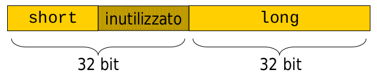

- Raggruppamento di variabili di tipo diverso
- Le parti che compongono una struct sono dette anche membri
- sono identificate da un nome (tag)
- In memoria i membri sono adiacenti
- e in ordine di dichiarazione
struct padding
- Tra un membro e il successivo ci possono però esser dei "buchi" (padding)
- spazi intermedi aggiunti per allineare la memoria
- Quanti byte vengono introdotti dipende dall'architettura
- Il padding non viene mai inserito prima del primo membro.
- quindi l'indirizzo della struct coincide con quello del primo membro
Struct Padding

In questo caso aggiungo del padding per allineare il long ad un multiplo di 32bit
Struct: dichiarazione
struct nome_tag
{
tipo1 nome_membro1;
tipo2 nome_membro2;
...
};
La dichiarazione non riserva memoria, ma crea un nuovo tipo di dato
Esempio:
struct punto
{
int x;
int y;
int z;
};